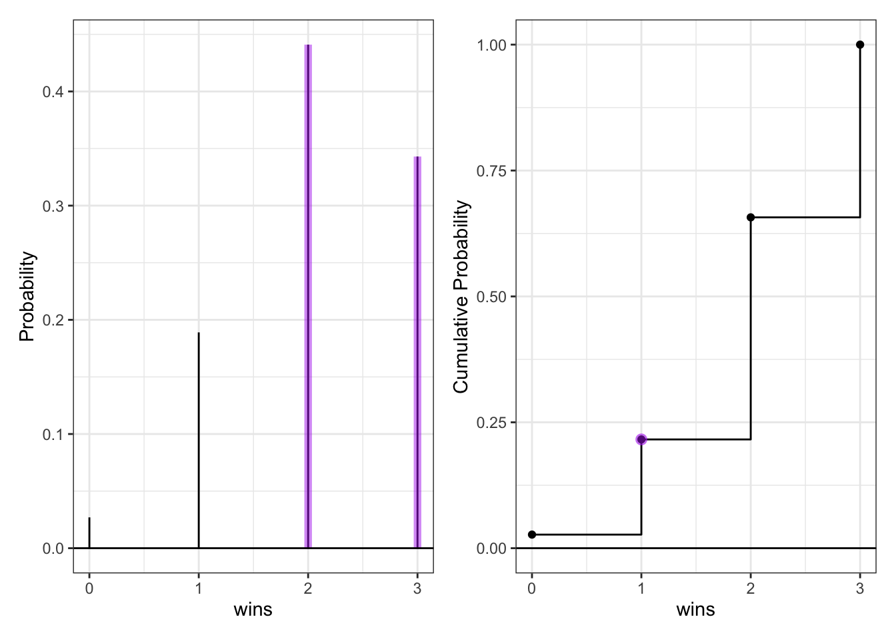
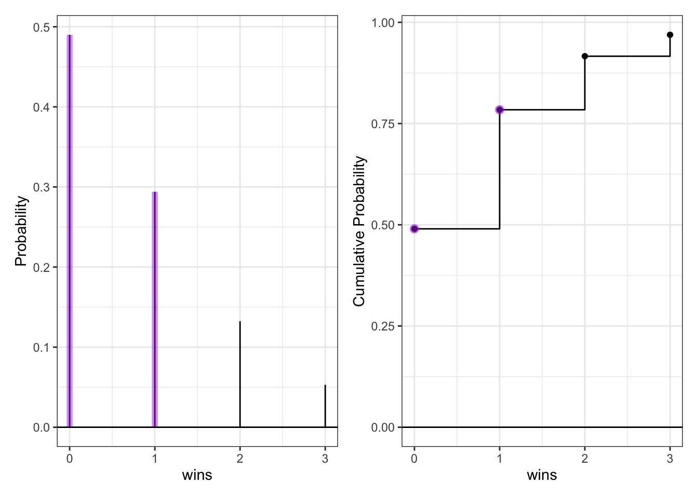
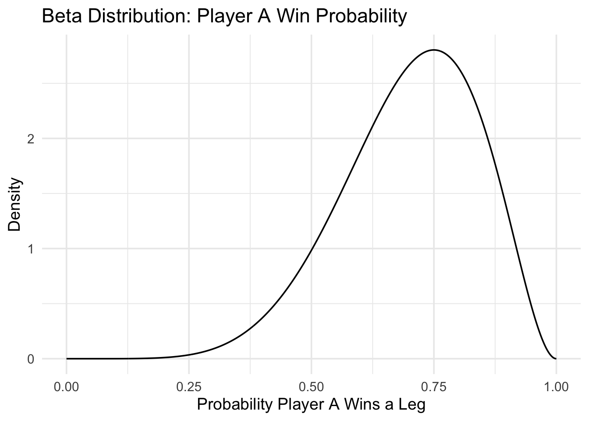
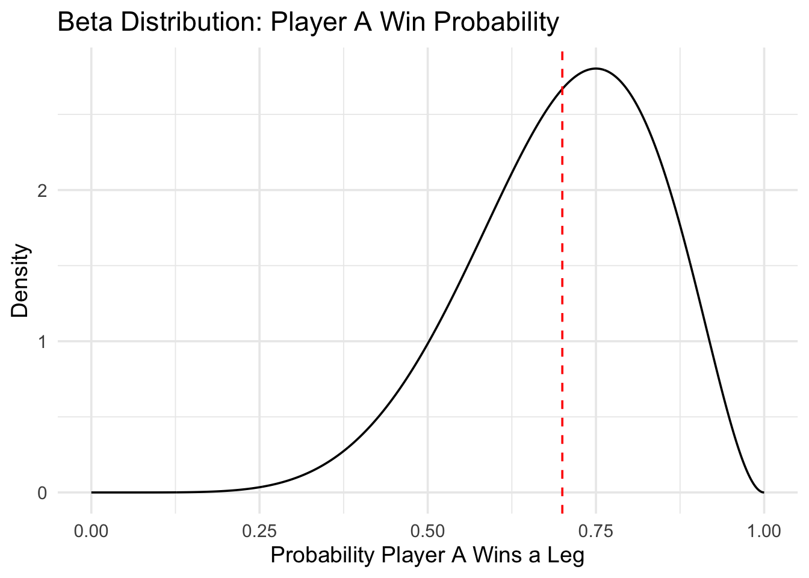
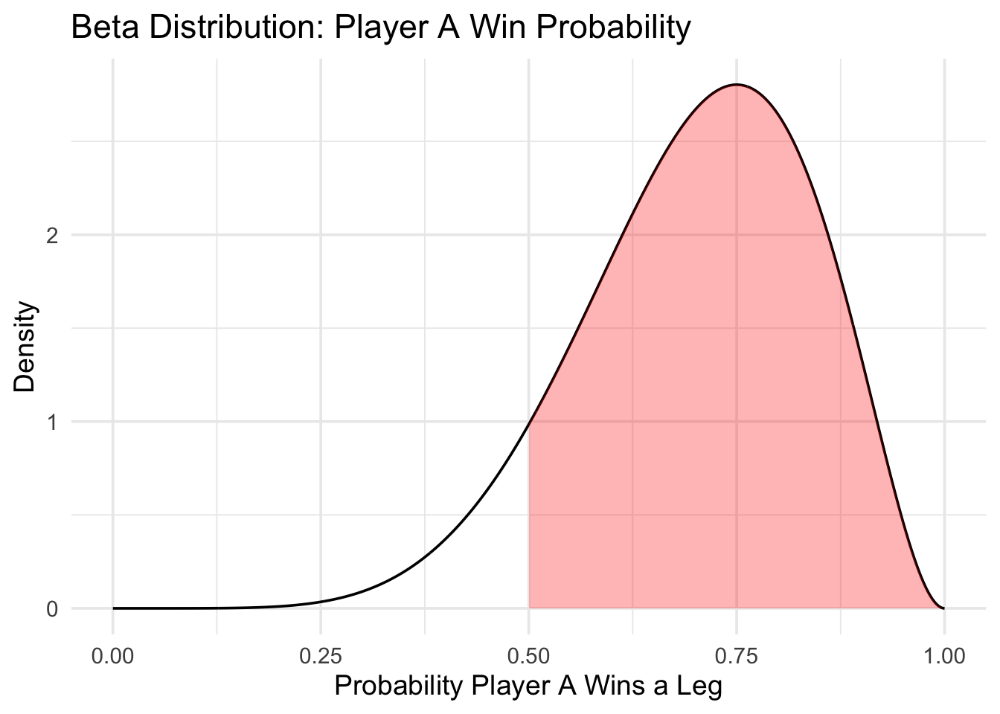
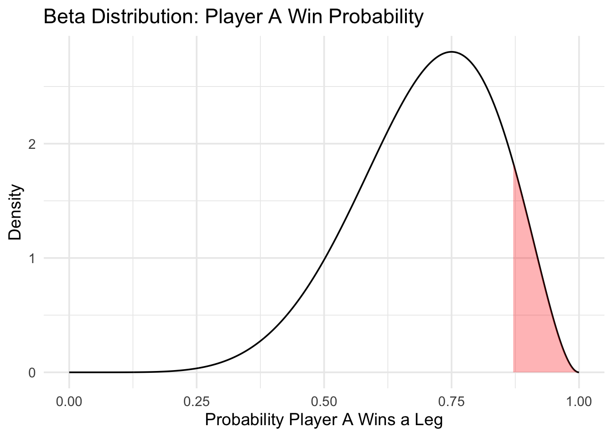
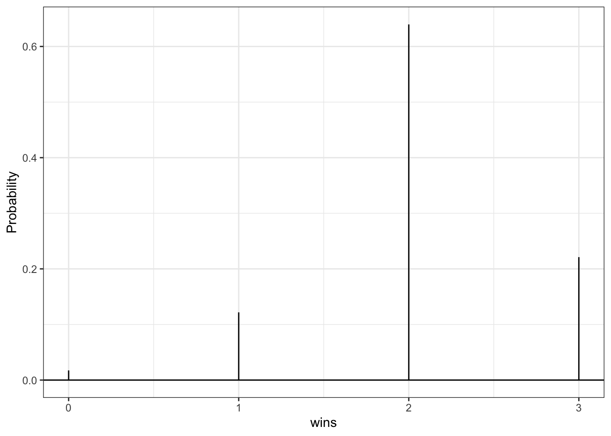
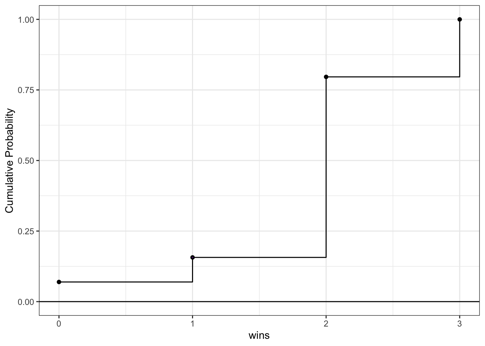
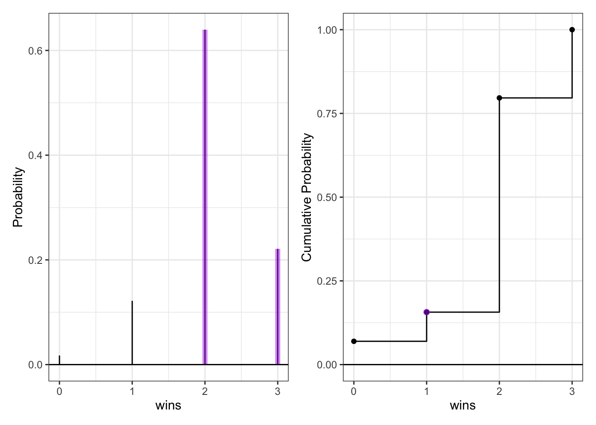
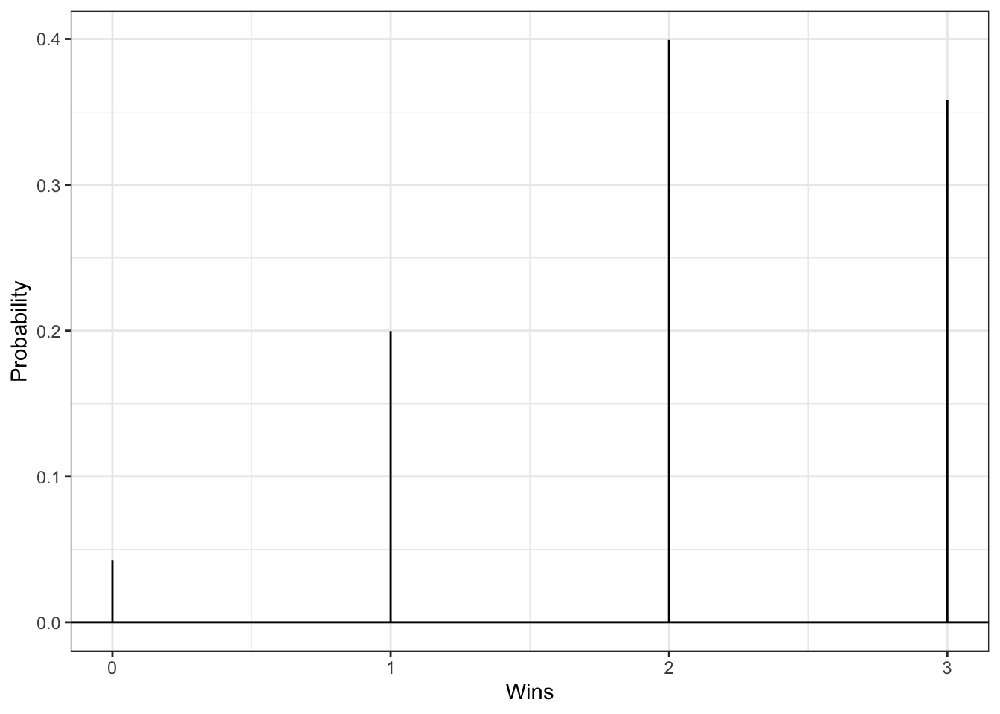

Lab Eight – Probability
Tips
- Complete the tasks below. Make sure to start your solutions in on a new line that starts with “Solution:”.
- Make sure to use the Quarto Cheatsheet. This will make completing and writing up the lab much easier.
- Make sure to use “enter” to make your code readable, so it doesn’t run off the page. I switched the Quarto document to automatically render to .pdf, so you can see what you’re submitting by default. You can switch back for the highlighting by moving the html block above the pdf block in the YAML header.
- Don’t forget that you can copy-and-paste code when you’re doing something similar as we did in class!
- Make sure to plot all computed probabilities. This is good
ggplotpractice AND will help make sure you don’t make a mistake when computing the probability.
1 The Binomial and Negative Binomial Distributions
1.1 The Binomial Distribution
In many introductory courses, we make the simplifying assumption of independence in Bernoulli trials. For example, when playing best two-out-of-three legs in a darts match, we would assume Player A has an 70% chance of winning each leg. We write: \[X \sim \text{Binomial}(n=3, p=0.70)\] where
- \(X\) is the number of legs won
- \(n\) is the number of trials
- \(p\) is the probability of the event of interest
Of note, it is not necessarily the case that the players play all three legs – if either player wins legs one and two the match ends.
There are eight possible outcomes for Player A:
- (win, win, “win”) \(\longrightarrow\) Player A wins
- (win, win, “lose”) \(\longrightarrow\) Player A wins
- (win, lose, win) \(\longrightarrow\) Player A wins
- (win, lose, lose) \(\longrightarrow\) Player A loses
- (lose, win, win) \(\longrightarrow\) Player A wins
- (lose, win, lose) \(\longrightarrow\) Player A loses
- (lose, lose, “win”) \(\longrightarrow\) Player A loses
- (lose, lose, “lose”) \(\longrightarrow\) Player A loses
Note: I use quotations above to denote outcomes where the last match isn’t actually played.
Use the Binomial distribution to compute the probability that Player A wins the match. Make sure write out your probability statement and work to write it in terms of the distribution function (PMF/CDF) to plot the probability using ggplot.
Solution: It would be the probability that Player A wins at least 2 games: \(P(X >= 2) = 1 - CDF(x <= 1)\)

1.2 The Negative Binomial Distribution
In intermediate courses, we learn the Negative Binomial distribution that we use to model the number of “failures” until the \(r\)th success. Note that this approach still makes the simplifying assumption of independence in Bernoulli trials.
Specify the two cases necessary to compute the probability. Fully explain these probability statements in the context of a best two-out-of-three match and the Negative Binomial distribution. Finally, compute the probability that Player A wins the match and show you get the same result as the Binomial approach. Make sure write out your probability statement and work to write it in terms of the distribution function (PMF/CDF) to plot the probability using ggplot.
Solution: The two cases are where Player A wins both of the first two legs, or they lose one of the first two but win in the third. The first case would use the negative binomial distribution to calculate the number of trials until a double win in a row, and the second case would use the negative binomial distribution to calculate the number of trials until u win the third leg with one loss somewhere before it. We add the probability of 0 losses in first case and one loss in second case.

2 The Beta Binomial Distribution
One approach to generalize this modeling is to use a Beta-Binomial distribution. This distribution arrises when we let \(p\) be a random variable that follows a Beta distribution: \[\begin{align*}
P &\sim \text{Beta}(\alpha, \beta)\\
X &\sim \text{Binomial}(n, P).
\end{align*}\] This distribution is not part of base R, but is available using the _bbinom functions from the extraDistr package (Wolodzko 2026).
The primary benefit is that the Beta-Binomial enables us to specify some uncertainty about the skill of Player A, as \(p\) does not have to be fixed (e.g., \(p=0.70\)). Suppose the result of the best two-out-of-three match follows a Beta-Binomial distribution where \(\alpha=7\) and \(\beta=3\).
2.1 The Beta Part
- Plot the corresponding Beta distribution. Interpret the plot in the context of a best two-out-of-three match and the Binomial distribution.
Hint: The Beta distribution is available in baseRvia_beta().
Solution:

- How does the Beta incorporate uncertainty about the skill of Player A? Compute the mean and variance of the distribution.
Hint: You will find theintegrate(...)function helpful here. \[\begin{align*} E(P) &= \mu_P = \int_{0}^1 p f_P(p) dp\\ var(P) &= \sigma^2_P = \int_{0}^1 (p-\mu_P)^2 f_P(p) dp\\ \end{align*}\]
Solution:
Code
[1] 0.7Code
[1] 0.01909091- What is the probability that Player A has a win probability of exactly 0.70? Make sure write out your probability statement and work to write it in terms of the distribution function (PDF/CDF) to plot the probability using
ggplot. Hint: Think carefully about the properties of continuous distributions here.
Solution: The probability that Player A has a win probability of exactly any number is 0 since continuous distributions do area calculations with integrals, if we take an integral of an infinitely small slice, it is 0.

- What is the probability that Player A has a win probability of at least 0.50? Make sure write out your probability statement and work to write it in terms of the distribution function (PDF/CDF) to plot the probability using
ggplot.
Solution:

- What is the 90th percentile of Player A’s win probability based on this Beta distribution? Make sure write out your probability statement and work to write it in terms of the distribution function (PDF/CDF) to plot the percentile using
ggplot.
Solution:

2.2 The Beta-Binomial Part
Compute the probability that Player A wins the match. Compare your result to the Binomial and Negative Binomial results. Make sure write out your probability statement and work to write it in terms of the distribution function (PMF/CDF) to plot the probability using ggplot
Solution:
2.3 The Why
Check the expected value and variance of each distribution.
Analytically, we have \[\begin{align*} E(X) &= np &&var(X) = np(1-p) \tag{Binomial Distribution}\\ E(X) &= n\left(\frac{\alpha}{\alpha+\beta}\right) &&var(X) = \frac{n \alpha \beta (\alpha + \beta + n)}{(\alpha+\beta)^2(\alpha + \beta + 1)} \tag{Beta-Binomial Distribution} \end{align*}\]
For each distribution, compute the mean number of legs won for player A.
Hint: You can perform the sum over the finite support set here. \[\begin{align*}
E(X) = \mu_X &= \sum_{i=0}^3 i f_X(i)\\
var(X) = \sigma_X &= \sum_{i=0}^3 (i-\mu_X) f_X(i)
\end{align*}\]
Solution:
3 Altham’s Multiplicative Binomial Distribution
While the Beta-Binomial enables us to model cases where winning has a clustering effect (e.g., a “hot hand”).
3.1 Probability Mass Function
The mass function for this distribution is below. While it used to be available in the MBD package for R, this package is no longer available. \[f_X(x) = \frac{1}{c} {n \choose x} p^x (1-p)^{n-x} \theta^{x(n-x)}I(x \in \{0, 1, ..., n\})\] where \[c = \sum_{i=0}^n {n \choose i} p^i (1-p)^{n-i} \theta^{i(n-i)}\]
Write a function in R called daltbinom() for computing the PMF of this distribution. Use your function to plot the distribution where \(p=0.70\) where \(\theta=0.50\), \(\theta=1\), and \(\theta=1.50\). Comment on the differences in the context of a best two-out-of-three match
Solution: This shows the effect of clustering around winning streaks, losing streaks, and no effect of a streak. With theta above 1, winning increases likelihood of winning, and vice versa for theta below 1.
Code
[1] 0.05118483 0.08957346 0.20900474 0.65023697[1] 0.027 0.189 0.441 0.343[1] 0.0151049 0.2379021 0.5551049 0.1918881Code
theta = c(0.5, 1, 1.5, 0)
MBDDat <- tibble(x = 0:3) |>
mutate(PMF = daltbinom(x, n, 0.7, theta))
PMF.plot <- ggplot() +
geom_linerange(data = MBDDat,
aes(x = x, ymin = 0, ymax = PMF)) +
geom_linerange(data = MBDDat |> filter(x>=2),
aes(x = x, ymin = 0, ymax = PMF),
color = "darkorchid2", linewidth=0, alpha=0.50) +
geom_hline(yintercept = 0) +
scale_x_continuous("wins", breaks=0:3) +
ylab("Probability") +
theme_bw()
PMF.plot
3.2 Cumulative Distribution Function
Use your daltbinom() function to create a paltbinom() function for computing the CDF of this distribution. Use your function to plot the distribution where \(p=0.70\) where \(\theta=0.50\), \(\theta=1\), and \(\theta=1.50\).
Solution:
Code
MBDDat = MBDDat |>
mutate(CDF = paltbinom(x, n, 0.7, theta))
CDF.plot <- ggplot() +
geom_step(data=MBDDat, aes(x = x, y = CDF)) +
geom_point(data=MBDDat, aes(x = x, y = CDF)) +
geom_point(data=MBDDat |> filter(x==1),
aes(x = x, y = CDF),
color="darkorchid2", size=0, alpha=0.50) +
geom_hline(yintercept = 0) +
scale_x_continuous("wins", breaks=0:10) +
ylab("Cumulative Probability") +
theme_bw()
CDF.plot
3.3 The Winning Probability
Compute the probability that Player A wins the match using Altham’s Multiplicative Binomial Distribution. Compare your result to the Binomial and Negative Binomial results. Compare your results to the Beta-Binomial model, too. Make sure write out your probability statement and work to write it in terms of the distribution function (PMF/CDF) to plot the probability using ggplot.
Solution: When theta is 1, it should have the same values as negative and normal binomial distributions because that is when the MBD has no skew to clusters, and will follow the similar curve. The beta binomial being inbetween theta = 1 and > 1 makes sense because the beta distribution leans more towards the extreme values.
Code
theta=0.5 theta=1 theta=1.5
0.8592417 0.7840000 0.7469930 [1] "Binomial:"[1] 0.784[1] "Negative Binomial:"[1] 0.784[1] "Beta-Binomial:"[1] 0.7636364
4 Altham’s Multiplicative Beta-Binomial Distribution
You may have wondered – “Can we do the Beta thing with Altham’s version of the Binomial Distribution?” The answer is yes!
4.1 Probability Mass Function
The mass function for this distribution is below. \[f_X(x) = \left[\int_{0}^1 dp \left(\frac{1}{c} {n \choose x} p^x (1-p)^{n-x} \theta^{x(n-x)}\right)\left(\frac{\Gamma(\alpha+\beta)}{\Gamma(\alpha)\Gamma(\beta)} p^{\alpha-1}(1-p)^{\beta-1}\right)\right]I(x \in \{0, 1, ..., n\})\]
Write a function in R called daltbbinom() for computing the PMF of this distribution. Use your function to plot the distribution where \(\alpha=7\) and \(\beta=3\) where \(\theta=0.50\), \(\theta=1\), and \(\theta=1.50\). Comment on the differences in the context of a best two-out-of-three match.
Hint: You can use the integrate() in R to compute the integral. Note that this requires the function to be vectorized – it should be unless you have added any block conditionals.
Solution:
Code
daltbbinom = function(x, n, alpha, beta, theta){
right = gamma(alpha + beta) / (gamma(alpha) * gamma(beta))
one_x = function(xi) {
integral = function(p) {
choose(n, xi) * p^(xi + alpha - 1) * (1 - p)^(n - xi + beta - 1) * theta^(xi * (n - xi)) * right
}
integrate(integral, lower = 0, upper = 1)$value
}
prob = sapply(x, one_x)
return(prob / sum(prob))
}
(daltbbinom(x, n, 7, 3, theta))[1] 0.04265257 0.19970396 0.39936191 0.35828156Code
AlthDat <- tibble(x = 0:3) |>
mutate(PMF = daltbbinom(x, n, 7, 3, theta))
PMF.plot <- ggplot() +
geom_linerange(data = AlthDat,
aes(x = x, ymin = 0, ymax = daltbbinom(x, n, 7, 3, theta))) +
geom_linerange(data = AlthDat,
aes(x = x, ymin = 0, ymax = PMF),
color = "darkorchid2", linewidth=0, alpha=0.50) +
geom_hline(yintercept = 0) +
scale_x_continuous("Wins", breaks=0:3) +
ylab("Probability") +
theme_bw()
PMF.plot
5 A Comparison
Compute the probabilities for all outcomes for Player A.
- Loses 0-2 (LL”L”, LL”W”)
- Loses 1-2 (WLL, LWL)
- Wins 2-0 (WW”W”, WW”L”)
- Wins 2-1 (LWW, WLW)
Note: You’ll need to define these outcomes in terms of the random variable.
Create a bar plot (or column plot) using ggplot to show the probability of each outcome under the following conditions:
- Binomial
- Negative Binomial
Note: You can compute the lose probabilities the same way as the win probabilities using success probability (\(1-p\)) - Beta-Binomial
- Althman Binomial with \(\theta=0.50\) and \(\theta=1.5\)
- Althman Beta-Binomial with \(\theta=0.50\) and \(\theta=1.5\)
Comment on the differences in the context of a best two-out-of-three match.
Solution:
Code
total = tibble(
Outcome = factor(c("Lose 0-2","Lose 1-2","Win 2-1","Win 2-0"),
levels = c("Lose 0-2","Lose 1-2","Win 2-1","Win 2-0")),
Binom = winner_A,
Negative_Binom = negative,
Beta_Binom = win_beta,
Altham_0.5 = win_alth[[1]],
Altham_1.5 = win_alth[[2]],
Altham_Beta_0.5 = win_alth_beta[[1]],
Altham_Beta_1.5 = win_alth_beta[[2]])
total_vert = total |>
pivot_longer(-Outcome, names_to = "Model", values_to = "Probability")